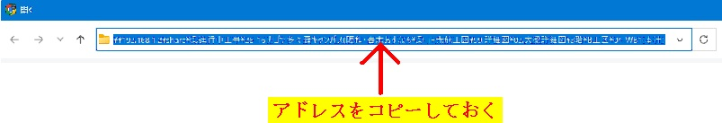

TDFファイルを選択、またはこの画面にドラッグ&ドロップしてください
該当ファイルがあるフォルダ絶対パスを事前コピー必要
フォルダパスを起点に図番にハイパーリンクが付与されます。
※ファイル選択時のアドレスをコピーする
フォルダパスを起点に図番にハイパーリンクが付与されます。
※ファイル選択時のアドレスをコピーする

| ID | 図番 | 製品マーク | 設計符号 | サイズ | 本数 | 長さ(m) | 重量(t) | 左継手 | 右継手 |
|---|
![正光ロゴ]() 株式会社 正光 株式会社 正光
株式会社 正光 株式会社 正光 TDFファイルを選択、またはこの画面にドラッグ&ドロップしてください

| ID | 図番 | 製品マーク | 設計符号 | サイズ | 本数 | 長さ(m) | 重量(t) | 左継手 | 右継手 |
|---|